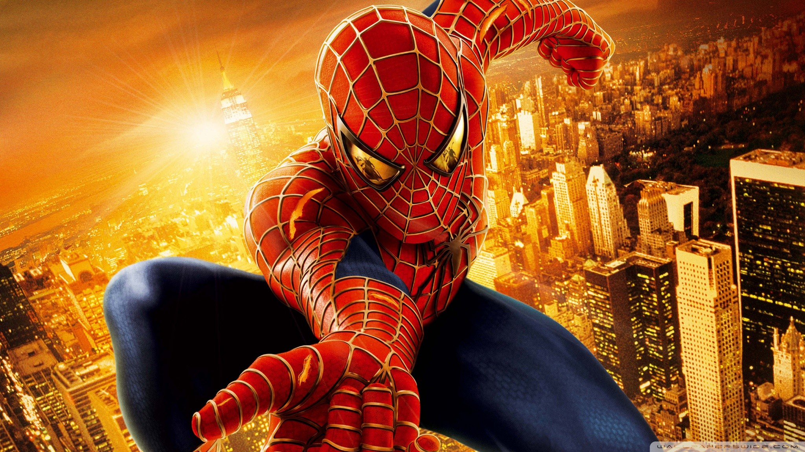
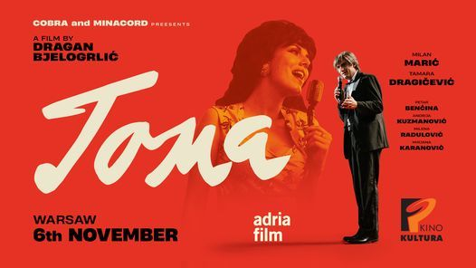
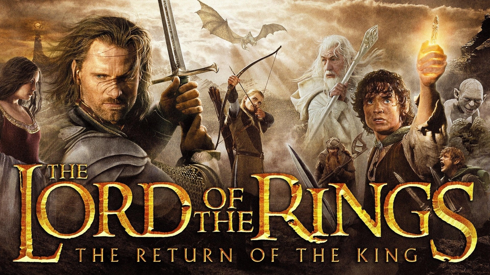
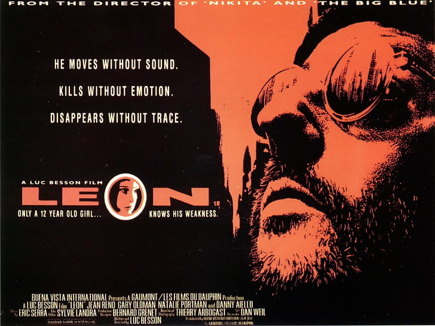

Studenta Petera Parkera ugrize genetički preinačen pauk. Peter ubrzo otkriva da posjeduje neobične moći: nadaren je snagom i sposobnostima pauka s posebno izoštrenim paukovskim osjetilima. Piteru će ove moći pomoći u njegovoj nameri da pomaže nedužnima.
Film “TOMA” je jedan impresionistički portret Tome Zdravkovića koji prikazuje same njegove početke, baš kao i vrhunac slave, njegove ljubavi koje su ga inspirisale prilikom komponovanja nekih od najvećih hitova, baš kao i odnos sa velikim brojem prijatelja koje je imao u umetičkom miljeu tadašnje Jugoslavije.
Sauron je okupio ogromnu vojsku i kreće na Minas Tirit, glavni grad Gondora, kako bi uništio rasu ljudi. U najtežim trenucima u istoriji nekada moćnoga carstva, kralj je preko potreban da podigne moral ljudima, a to će konačno postati Aragorn, koji sakuplja vojsku duhova i dovodi je u pomoć. Gandalf, uz pomoć kralja Teodena, okuplja razbijenu vojsku Gondora za najveću bitku ikada.
Nakon što oca, majku, stariju sestru i malog brata ubiju očevi poslodavci, dvanaestogodišnja ćerka strašnog dilera droge prisiljena je da se skloni u stan profesionalnog ubice koji je na njen zahtev uči metodama njegovog posla kako bi se mogla osvetiti korumpiranom agentu DEA koji joj je uništio život ubivši svog voljenog brata.
